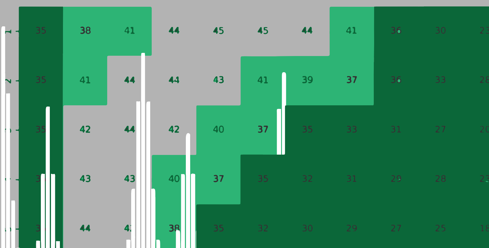
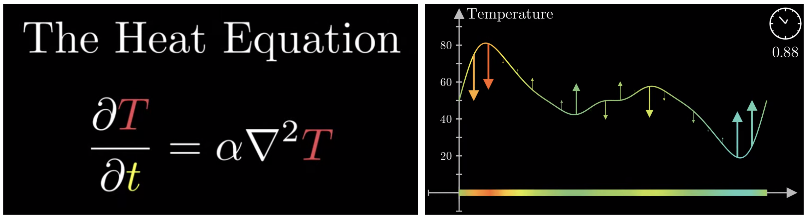
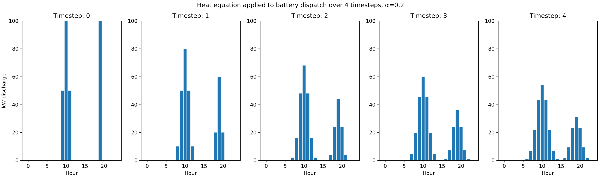
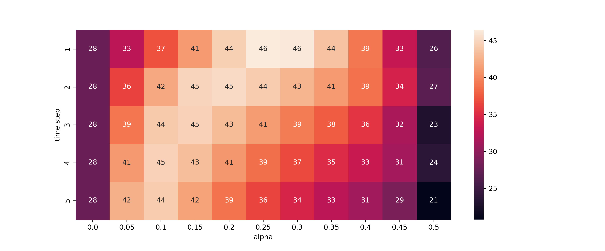
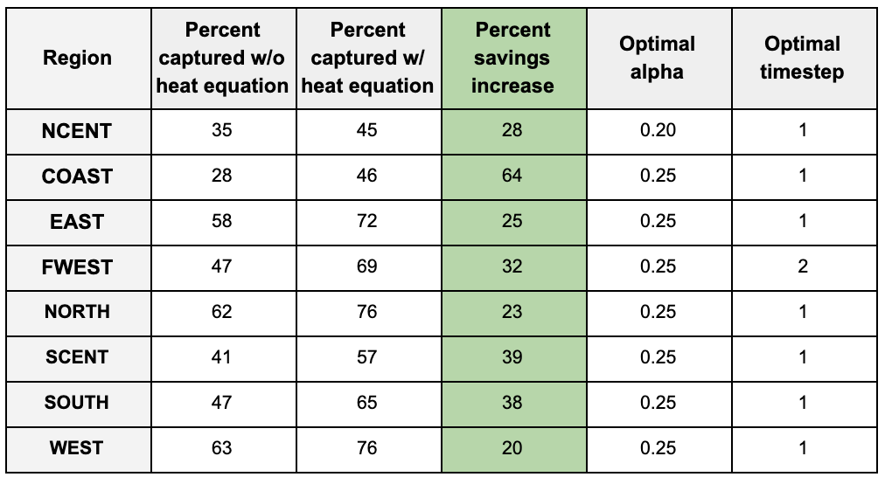

Peak shaving with unreliable forecasts
How one 19th-century physics equation can increase electric utilities’ savings by more than 60 percent.
September 4, 2019
Even the best models for predicting energy consumption aren’t good enough to capture a majority of the possible value of peak shaving. When a forecast has just 3% error, it’s not unusual to lose half of possible savings as a consequence. Consider how the smallest inaccuracies dramatically affect these utilities’ expected savings from peak shaving ###(testing here)###:
With this in mind, it’s important to consider what kind of dispatch strategies utilities should deploy when factoring in the uncertainty surrounding the following day’s load prediction. Thankfully, we can use one equation to plan for that uncertainty, hedge our bets, and regain some of the value lost in imperfect predictions.
The Setup
The 3D heat equation is shown below. 3Blue1Brown’s introduction to this topic served as the inspiration to this approach. For our purposes, all you need to know is that the heat equation is a convenient function to flatten curves while the area under the curve remains constant. We want to spread out our dispatches while still using all the resources available to us.

Left: The 3D heat equation, where T is temperature, alpha is some constant and t is time. Right: How the heat equation affects a curve. Source: 3Blue1Brown
Consider a forecast for tomorrow’s load curve. We know that it’s generally right, to about 3 mean absolute percent error. We can’t put all of our eggs into one basket (i.e. put all of our battery dispatch into one hour). We calculate what’s the ideal storage dispatch on the forecasted load, and then apply the heat equation to spread out to nearby hours. This ensures that the smallest forecast error doesn’t lead to a significant drop in savings.
Here is the heat equation translated into python, and its effect on a storage dispatch:
def heat(l, alpha, time_steps):
'''apply the heat equation to list l, given constants alpha and time_steps'''
return_l = []
for t in range(time_steps):
if len(return_l) != 0:
l = return_l
return_l = []
for i, x in enumerate(l):
if i == 0:
diff = (0 - l[i]) - (l[i] - l[i+1])
return_l.append(l[i] + alpha*diff)
elif i == len(l) - 1:
diff = (l[i-1] - l[i]) - (l[i] - 0)
return_l.append(l[i] + alpha*diff)
else:
diff = (l[i-1] - l[i]) - (l[i] - l[i+1])
return_l.append(l[i] + alpha*diff)
# proportionally correct if boundaries hit, then return new list
sum_r, sum_l = sum(return_l), sum(l)
return [round((sum_l / sum_r)*x, 4) for x in return_l] if sum_l != sum_r else return_l

Other details
The biggest mistake a utility can make is to attempt to charge a battery at the wrong time. In the numerous models that I’ve tested, batteries recharging mid-day have consistently increased the month’s peak. For this reason, it’s best to always play it safe and always charge when consumption is at an absolute low. From what I’ve gathered, this insurance strategy loses only about 1–2% of the optimal possible value captured, and is well worth it, at least until forecast prediction software gets considerably better.
In order to make the dispatch decisions, we use the linear programming python package puLP. The details of the package can be found here — it’s very useful for any kind of operations research. We state an objective function like “minimize the maximum load” while providing the battery’s limitations.
The Results
I tested how the heat equation would impact revenue across the eight ERCOT regions of Texas from 2002 to 2018. To simulate prediction accuracy, I added a normal distribution of noise with 3% standard deviation around the load. I assumed that we had 700kW of storage, where a maximum of 500kW can be dispatched per hour. The functions and testing can be found in ###this jupyter notebook.###
It’s important to clarify that tests were performed on every day’s peak to gather a larger sample. I rely on the assumption that there’s not a significant difference between monthly peaks and daily peaks.

Percent of optimal value obtained if heat equation is applied with given values in the COAST region of ERCOT.
The heat map above shows the percent of optimal value gained when various values of alpha and time step are applied. In ERCOT’s coastal region, if the heat equation is not applied, utilities would gather 28% of optimal peak shaving value. If heat equation is appropriately applied, they capture 46% of optimal.The results for each region of Texas is tabulated below. Every region could be helped by applying this spreading formula. This formula would increase savings anywhere from 20% to 64%.

Furthermore, the constants that maximize savings are relatively similar for each region, suggesting that these constants are relatively stable over time and generalizable, though naturally, each utility would have to perform an independent analysis before applying them themselves.
A quick analysis on the NCENT region of Texas revealed that even with 99% accuracy, applying the heat equation would still improve savings. Until our prediction capabilities are as perfect as random effects allow, optimization formulas that take our uncertainty into consideration should be applied and perfected.